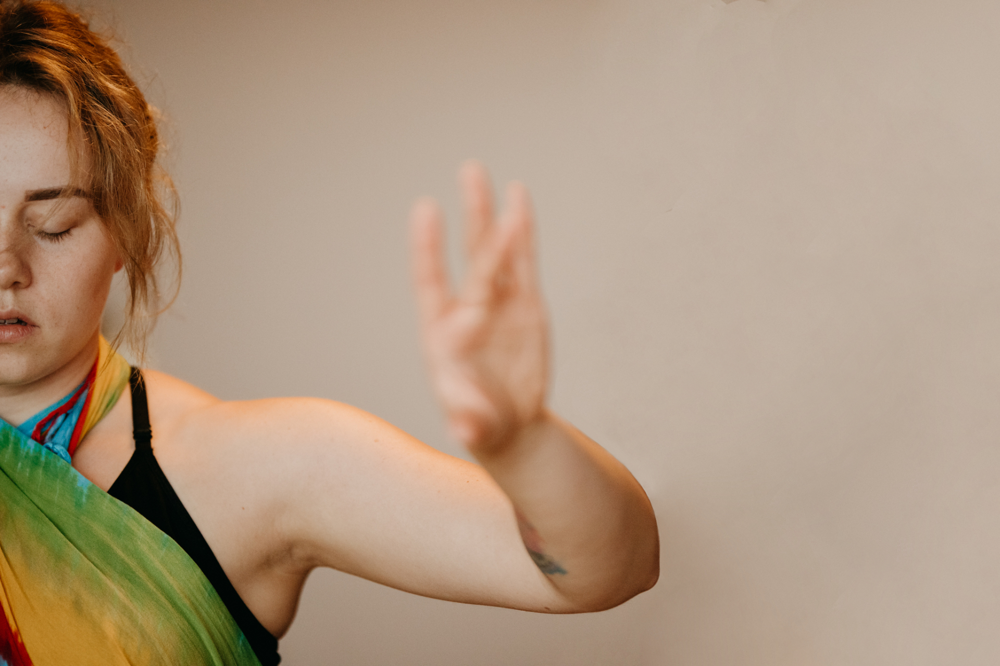
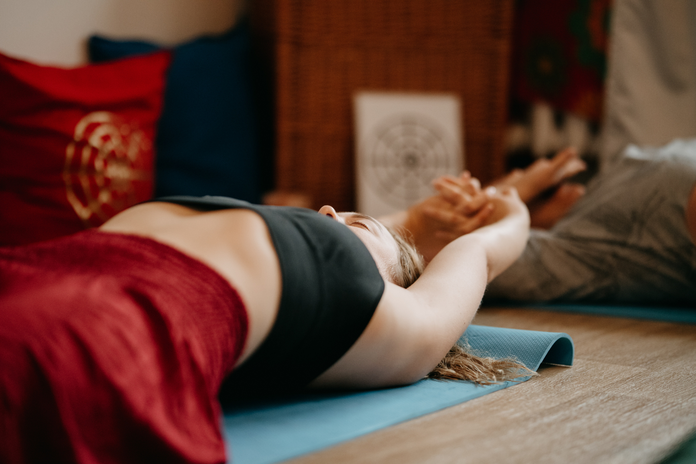
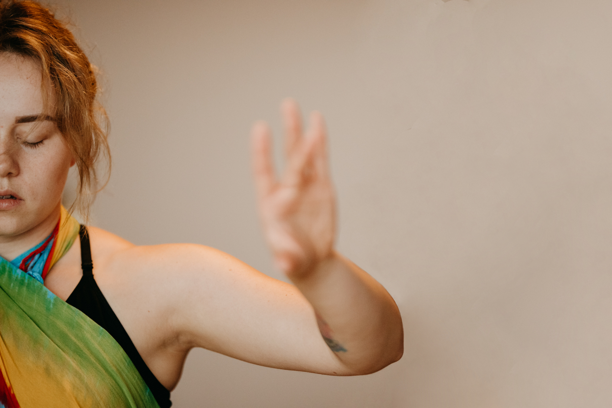
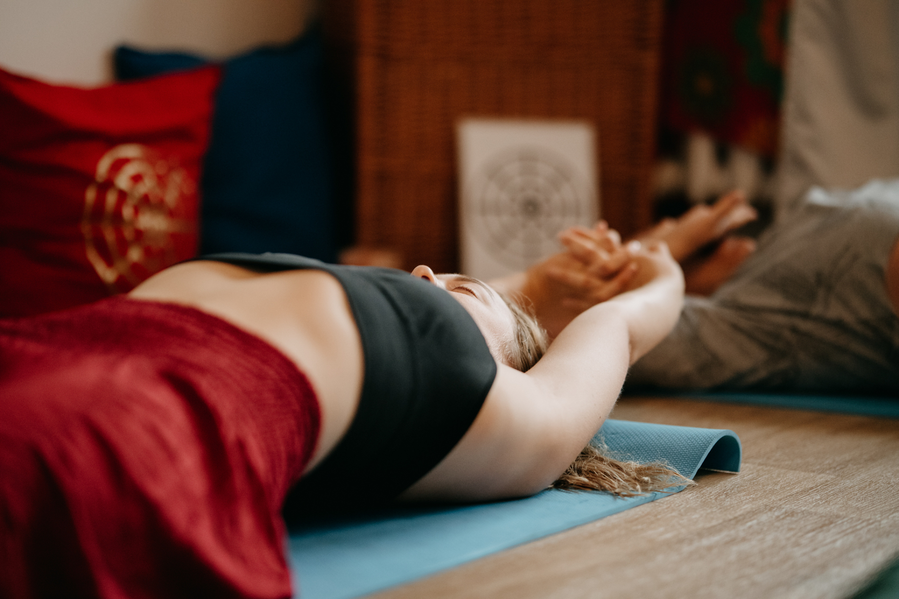

Hawajski Masaż Lomi Lomi Nui
Jest to rytualny masaż całego ciała, który ma na celu zintegrować Twoje ciało, umysł i duszę. Najczęściej był on wykonywany przed podjęciem ważnych decyzji by wzmocnić intuicję, dzięki której dokonamy jak najlepszego dla nas wyboru.
Przez setki lat był wykonywany przez kahunów (szamanów) i dostępny tylko dla społeczności hawajskiej. Współcześnie możemy korzystać z jego dobrodziejstw jako wielkiej sztuki uzdrawiania dotykiem.
Czego możesz się spodziewać?Technicznie sam masaż wyróżnia się głównie pracą przedramionami. Dłonie stają się jedynie dopełnieniem, które daje nam niesamowite uczucie otulenia. Jednakże najważniejszym elementem jest praca nóg, które w rytmie tańca Fregaty prowadzą każdy manewr rąk na ciele. Dopełnieniem są ruchy bierne kończyn, dzięki którym zwiększa się ich mobilność i elastyczność.
Jak wygląda sesja u mnie?Nasze spotkanie rozpocznie się rozmową przy ceremonialnym kakale (otwiera czakrę serca; wzmacnia proces transformacji-zmiany), która ma na celu oswojenie się z wzajemną energią, rozpoznaniem jej oraz ustaleniem intencji (inaczej życzenia; czyli w jakim celu przeprowadzamy sesję), którą wraz z masażem wypuścimy w świat. Tuż po przekroczeniu progu Świątyni Transformacji (potocznie pokoju do masażu) będzie czekać na Ciebie świeczka intencyjna, którą zapalisz na znak rozpoczęcia pracy. W trakcie pracy używam rozgrzanego oleju kokosowego oraz aromatycznych, naturalnych świec sojowych. Po zakończeniu masażu przykrywam ciało chustą a ty masz czas by powrócić do stanu, który pozwoli Ci na normalne funkcjonowanie. Dopiero na Twój znak zakończymy sesję.
Jak się przygotować?Na pewno nie jeść nic co najmniej godzinę przed masażem i przygotować sobie coś do przekąszenia by odzyskać energię po sesji. Ze względu na dość duże otłuszczenie zalecam zabranie ze sobą spodni dresowych oraz bluzy na przebranie. Sam masaż wymaga od ciebie całkowitego rozebrania się. Części intymne są zakryte chustą.
Czas trwania: 1 h 45 min* Koszt: 369 zł* +1h na rozmowę przed masażem i powrót do siebie zaraz po jego zakończeniu
Nie jesteś przekonany? Przeczytaj opinie moich klientów.